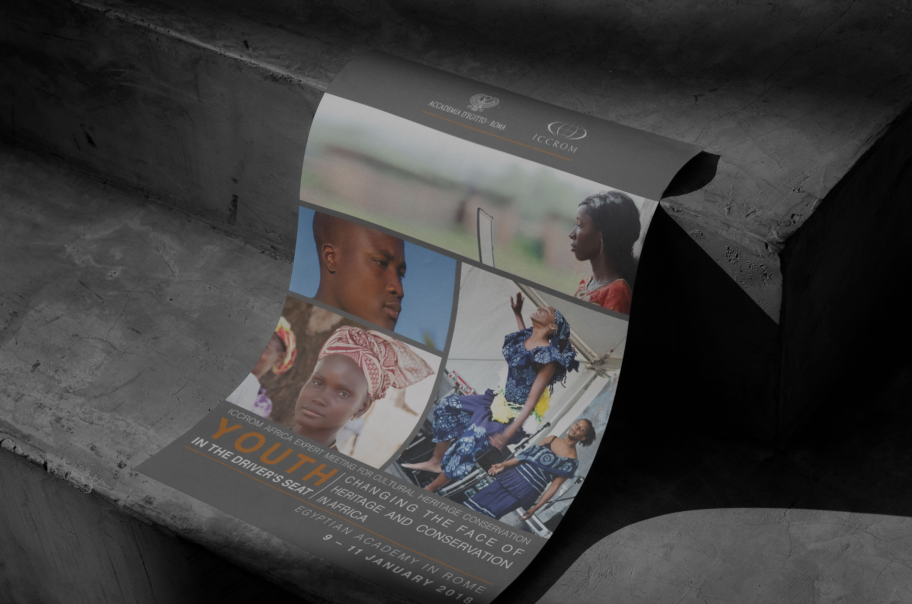
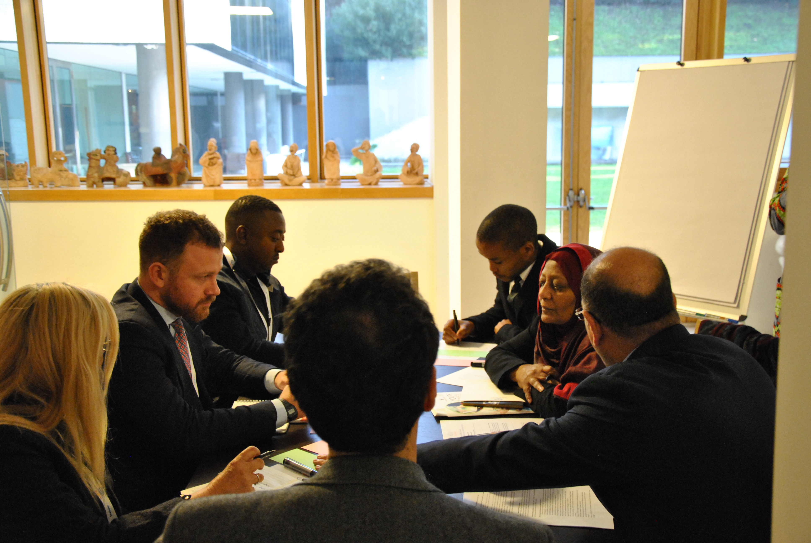
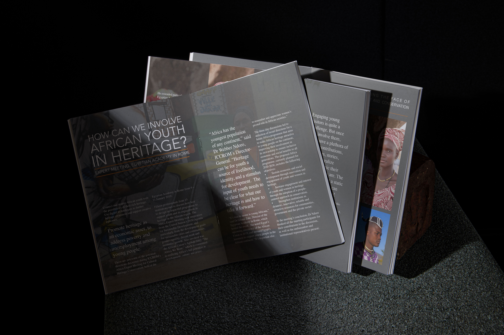

ICCROM
2019
Accademia d'Egitto a Roma - Flyer
This expert meeting brought together young professionals and experts from across Africa to discuss the evolving role of youth in the field of cultural heritage conservation.
Organized by ICCROM in partnership with the Egyptian Academy in Rome, the event provided a platform to amplify youth voices, share innovative practices, and reinforce Africa’s leadership in safeguarding its own heritage.
The poster is a compelling visual representation of the event's core message — empowerment through youth engagement. Featuring a collage of vivid photographs of young African heritage professionals, it reflects the diversity, dynamism, and cultural richness of the continent.